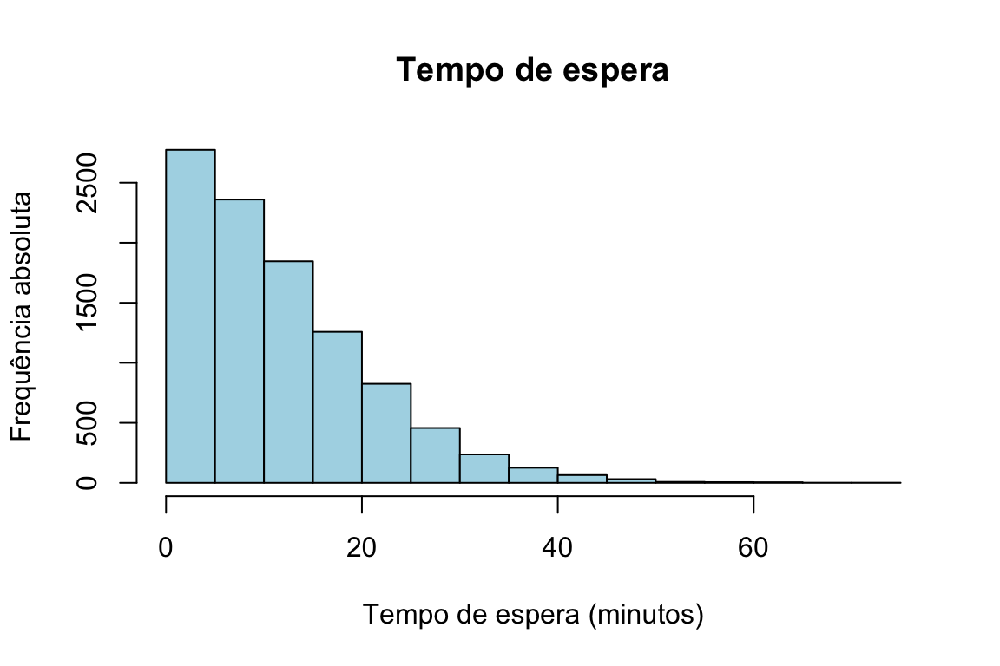

Capítulo 19 Simulação
Chegámos ao coração do livro. Simular é usar o computador para imitar um fenómeno aleatório — repeti-lo milhares ou milhões de vezes — e, a partir dos resultados observados, responder a perguntas que seriam difíceis, ou mesmo impossíveis, de resolver só com papel e caneta.
O fundamento teórico da simulação é a Lei dos Grandes Números: se observarmos uma grande amostra de variáveis aleatórias independentes e identicamente distribuídas (i.i.d.) com média finita, a média dessas observações converge para a média verdadeira da distribuição à medida que a dimensão da amostra aumenta. Por outras palavras, em vez de calcular analiticamente uma média (ou uma probabilidade, que é a média de uma variável indicadora), podemos gerar uma amostra grande e simplesmente calcular a média observada — que será uma boa estimativa do valor verdadeiro.
A eficácia deste método depende de três fatores:
- Identificar as variáveis aleatórias certas — que distribuições descrevem corretamente o fenómeno que estamos a modelar.
- Gerá-las com fidelidade — os algoritmos de geração de números pseudoaleatórios têm de produzir amostras que representem bem as distribuições pretendidas.
- Escolher uma dimensão de amostra adequada — grande o suficiente para que a estimativa seja fiável, sabendo que amostras maiores reduzem a variabilidade.
Neste capítulo compreendemos o princípio da simulação através da Lei dos Grandes Números, vemos como o R gera números pseudoaleatórios (e o que isso significa) e resolvemos, por simulação, um problema cuja solução analítica seria muito trabalhosa.
19.1 A simulação reproduz a teoria
Exemplo (estimar a média de uma uniforme). A média da distribuição uniforme em \([0, 1]\) é, sabidamente, \(\frac{1}{2}\). Pela Lei dos Grandes Números, a média de uma amostra \(X_1, \ldots, X_n\) dessa distribuição, \(\overline{X} = \frac{1}{n}\sum_{i=1}^n X_i\), deve aproximar-se de 0,5 à medida que \(n\) cresce.
A tabela seguinte mostra as médias de várias amostras simuladas, para diferentes dimensões \(n\). Note-se como as médias estão sempre próximas de 0,5, mas com uma variação que diminui claramente à medida que \(n\) aumenta:
| \(n\) | Rép. 1 | Rép. 2 | Rép. 3 | Rép. 4 | Rép. 5 |
|---|---|---|---|---|---|
| 100 | 0,485 | 0,481 | 0,484 | 0,569 | 0,441 |
| 1 000 | 0,497 | 0,506 | 0,480 | 0,498 | 0,499 |
| 10 000 | 0,502 | 0,501 | 0,499 | 0,498 | 0,498 |
| 100 000 | 0,502 | 0,499 | 0,500 | 0,498 | 0,499 |
Para gerar uma amostra uniforme em \([0, 1]\) usa-se a função runif():
runif(100, min = 0, max = 1)Aqui não havia necessidade real de simular, pois conhecíamos a média analiticamente — o exemplo serve apenas para mostrar que a simulação reproduz a teoria. A lição a reter é esta: por maior que seja a amostra, a média amostral não será exatamente igual à média verdadeira; a simulação introduz uma variabilidade que temos de considerar, e que só se reduz aumentando \(n\).
19.2 Quando a simulação vale mesmo a pena
Vejamos agora um problema fácil de descrever, mas cuja solução analítica seria penosa.
O problema. Dois empregados de balcão, A e B, começam a atender clientes ao mesmo tempo e combinam fazer uma pausa assim que ambos tiverem atendido 10 clientes. Provavelmente um terminará antes do outro e terá de esperar. Quanto tempo, em média, terá um deles de esperar pelo outro?
Modelamos os tempos de atendimento de cada cliente como variáveis i.i.d. com distribuição exponencial de taxa \(\lambda = 0{,}3\) clientes por minuto. Então, o tempo total que cada empregado leva a atender 10 clientes é a soma de 10 exponenciais i.i.d., que segue uma distribuição gama de forma \(k = 10\) e taxa \(\lambda = 0{,}3\). Sejam \(X\) e \(Y\) esses tempos para A e B; queremos \(E(|X - Y|)\).
A solução analítica exigiria um integral duplo sobre uma região não retangular. A simulação resolve o problema em poucas linhas: geramos muitos pares \((X, Y)\), calculamos \(Z = |X - Y|\) em cada um, e estimamos \(E(|X - Y|)\) pela média dos valores de \(Z\).
set.seed(123)
# Tempos para atender 10 clientes: soma de 10 exponenciais = Gama(forma=10, taxa=0.3)
x <- rgamma(10000, shape = 10, rate = 0.3)
y <- rgamma(10000, shape = 10, rate = 0.3)
z <- abs(x - y) # tempo de espera em cada réplica
mean(z) # estimativa de E(|X - Y|)
## [1] 11.76A simulação estima um tempo médio de espera de cerca de 11,7 minutos. O histograma mostra a distribuição completa desses tempos:
hist(z,
main = "Tempo de espera",
xlab = "Tempo de espera (minutos)",
ylab = "Frequência absoluta",
col = "lightblue", border = "black")
Figura 19.1: Distribuição do tempo de espera de um empregado pelo outro.
19.3 Números pseudoaleatórios
Vale a pena perceber o que o computador faz quando lhe pedimos “acaso”.
Números verdadeiramente aleatórios derivam de processos físicos imprevisíveis — o ruído térmico de um circuito, o decaimento radioativo, a radiação cósmica. Obtê-los é difícil e, para a maioria das aplicações, desnecessário.
Números pseudoaleatórios, pelo contrário, são produzidos por um algoritmo determinístico que, a partir de um valor inicial — a semente (seed) —, gera uma sequência que parece aleatória. Como o algoritmo é determinístico, a mesma semente produz sempre a mesma sequência. Não sendo verdadeiramente aleatórios, são rápidos de gerar, suficientemente imprevisíveis para quase tudo e, sobretudo, reprodutíveis — uma vantagem decisiva para a investigação e para a depuração de código.
19.3.1 O método congruencial multiplicativo
Um dos geradores clássicos é o método congruencial multiplicativo (ou de Lehmer). A partir de uma semente \(x_0\), os valores seguintes obtêm-se pela recorrência \[x_n = (a \cdot x_{n-1}) \bmod m,\] onde \(a\) e \(m\) são inteiros positivos dados e \(x_n\) é o resto da divisão inteira de \(a \cdot x_{n-1}\) por \(m\). Cada quociente \(x_n / m\) é um número pseudoaleatório, aproximando uma variável uniforme em \((0, 1)\).
Para servir numa simulação, as constantes \(a\) e \(m\) devem garantir que a sequência pareça aleatória, tenha um período longo antes de se repetir e seja eficiente de calcular. Com \(m = 17\), \(a = 5\) e \(x_0 = 7\):
\[x_1 = (5 \times 7) \bmod 17 = 1, \quad x_2 = (5 \times 1) \bmod 17 = 5, \quad x_3 = (5 \times 5) \bmod 17 = 8, \ \ldots\]
Continuando, obtém-se a sequência \[7,\, 1,\, 5,\, 8,\, 6,\, 13,\, 14,\, 2,\, 10,\, 16,\, 12,\, 9,\, 11,\, 4,\, 3,\, 15,\, \underbrace{7}_{\text{repete}},\, 1,\, 5,\, 8, \ldots\] com período 16.
Não é por acaso que o período é exatamente 16. Como \(m = 17\) é primo e \(a = 5\) é uma raiz primitiva módulo 17, a sequência percorre todos os valores de 1 a \(m - 1\) antes de repetir — o chamado período completo, \(m - 1\). Note-se ainda que, sendo o gerador multiplicativo, o valor 0 nunca aparece: os \(x_n\) estão sempre entre 1 e \(m - 1\), e os \(x_n/m\) em \((0, 1)\). Escolher bem \(a\) e \(m\) é, por isto, uma questão delicada — os geradores usados na prática têm períodos astronomicamente longos.
19.4 A função set.seed()
No R, a semente do gerador fixa-se com set.seed(). Executar set.seed() com o mesmo
número antes de uma operação aleatória garante que ela produz sempre os mesmos
resultados:
Reexecutando o mesmo código com a mesma semente, obtêm-se exatamente os mesmos cinco números. O gerador que o R usa por omissão é o Mersenne Twister, com um período verdadeiramente enorme; quando não fixamos a semente, o R constrói uma a partir da hora e da sessão, pelo que cada execução parte de um ponto diferente.
Fixar a semente é um hábito, não uma limitação: os resultados continuam a comportar-se
como acaso, mas tornam-se reprodutíveis. Todas as simulações deste livro que devam dar
sempre o mesmo resultado começam por set.seed().
19.5 Exercícios
1. Fixe uma semente à sua escolha com set.seed().
- Gere duas amostras de dimensão 10 dos números de 1 a 50, sem reposição.
- Mude a semente e gere novamente as amostras.
- Compare os resultados antes e depois de mudar a semente.
2. Fixe a semente com set.seed(123).
- Simule 100 lançamentos de um dado (1 a 6) e conte a frequência de cada face.
- Repita o processo sem redefinir a semente.
- Volte a fixar
set.seed(123)e repita. Compare com a primeira simulação.
3. Use set.seed() para gerar 50 valores de uma normal \(N(\mu = 10, \sigma = 2)\)
com rnorm(50, mean = 10, sd = 2).
- Com a mesma semente, gere 50 valores de uma uniforme \(U(0, 1)\) com
runif(50). - Mude a semente e repita. Compare os conjuntos de dados gerados.
4. Fixe a semente com set.seed(42).
- Divida os números de 1 a 100 em dois grupos aleatórios de 50 (use
sample()esetdiff()). - Repita a divisão sem fixar a semente.
- Volte a fixar
set.seed(42)e repita. Verifique se os grupos são os mesmos.
5. Use set.seed() para simular as respostas de 50 participantes a uma pergunta de
escolha múltipla com 4 opções (A, B, C, D).
- Mude a semente e repita a simulação.
- Verifique se a distribuição das respostas muda ao alterar, ou ao manter, a semente.
Sabemos agora simular e reproduzir o acaso. No próximo capítulo passamos em revista as distribuições de probabilidade mais importantes e as funções que o R lhes dedica — o vocabulário indispensável de qualquer simulação.